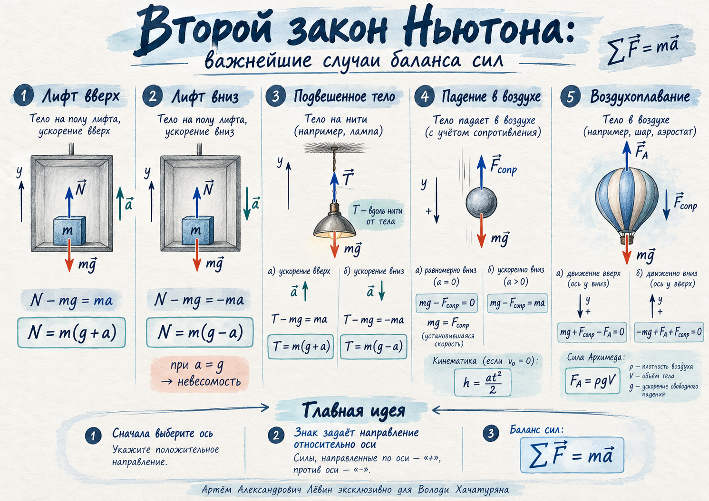

Персональный атлас · занятие 21.10.26
Силы решают, как меняется движение
Лифт, подвешенный груз, падение с сопротивлением и воздухоплавание. Учимся видеть силы, выбирать ось и записывать второй закон Ньютона.
Главное различие: знак проекции задаёт направление относительно выбранной оси. Скорость и ускорение могут смотреть в разные стороны.

Одна ось — единые правила знаков
Для выбранного тела изображаем все действующие силы. Затем складываем их проекции и получаем проекцию ускорения.
Куда направлены силы
Как ставить знак
Сила или ускорение направлены по оси → проекция положительна. Против оси → проекция отрицательна.
Оба уравнения описывают одно состояние лифта с ускорением вниз. Из обоих получается N = m(g − a).
Лифт: ускорение определяет реакцию
В обоих случаях выбираем ось вверх. Сила тяжести направлена вниз, реакция опоры — вверх.
Ускорение вверх ↑
При m = 3 кг и a = 2 м/с²: N = 36 Н.
Ускорение вниз ↓
При тех же данных: N = 24 Н. При a = g реакция равна нулю. Если пол лифта ускоряется вниз с a > g, тело теряет контакт с ним: формула реакции опоры уже неприменима.
Груз на вертикальной нити
Нить тянет груз вдоль себя в сторону точки подвеса; вниз действует тяжесть.
Без ускорения
Ускорение вверх
Ускорение вниз
Разобранный случай
Груз 2 кг, ускорение вверх 20 м/с², g = 10 м/с²:
Если расчёт натяжения даёт отрицательный результат, условие натянутой нити нарушено. При a = g вниз натяжение равно нулю.
Падение в воздухе
При движении вниз сила сопротивления направлена вверх. Здесь выбираем положительную ось вниз.
Падение равномерное
Ускорение нулевое, скорость может быть ненулевой. Например, при m = 0,8 кг сопротивление 8 Н.
Ускоренное падение
При mg > Fсопр ускорение вниз. При mg < Fсопр тело ещё падает, но замедляется.
Сила Архимеда плюс сопротивление
Сила Архимеда направлена вверх; сопротивление направлено против движения в неподвижном воздухе.
Равномерный подъём ↑
Выталкивающая сила уравновешивает тяжесть вместе с сопротивлением.
Равномерный спуск ↓
При спуске сопротивление меняет направление; сила Архимеда остаётся направленной вверх.
Шар m = 0,2 кг равномерно поднимается, Fсопр = 0,4 Н, ρ = 1,25 кг/м³. Из FA = mg + Fсопр = 2,4 Н получаем V = 0,192 м³.
От баланса сил к времени падения
Занятие объединяет динамику и кинематику: сначала находим ускорение по силам, затем время по высоте.
Пример занятия
Из состояния покоя с высоты 20 м падает тело массой 0,1 кг. Сила сопротивления вверх 0,2 Н, g = 10 м/с².
В решении начальная скорость равна нулю, ускорение постоянно, сила Архимеда не учитывается.
Важнейшие случаи — на одном листе
Пять схем силового баланса, которые удобно сравнивать визуально.

Самостоятельная тренировка
Ровно десять заданий из чек-листа. Во всех случаях g = 10 м/с². Решайте от схемы сил и выбора оси.
- Масса 2 кг. Сила 26 Н вверх и 20 Н вниз. Ось вверх. Запишите закон Ньютона и найдите ускорение.
- Груз 4 кг на полу лифта ускоряется вверх с 2 м/с². Найдите N.
- Ящик 5 кг в лифте ускоряется вниз с 3 м/с². Найдите N, запишите уравнение для оси вниз.
- Лампа 2,5 кг неподвижно висит на нити. Найдите T.
- Груз 1,2 кг на нити ускоряется вверх с 1,5 м/с². Найдите T.
- Груз 3 кг на натянутой нити ускоряется вниз с 4 м/с². Найдите T.
- Тело 0,8 кг падает с постоянной скоростью. Найдите сопротивление воздуха.
- Тело 0,5 кг падает вниз, сопротивление 1 Н вверх. Найдите ускорение.
- Шар массой 0,2 кг равномерно поднимается, сопротивление 0,4 Н, плотность воздуха 1,25 кг/м³. Найдите объём.
- Тело 0,25 кг отпускают с высоты 16 м; постоянное сопротивление 0,5 Н вверх. Найдите ускорение и время падения.
Открыть ответы и ключевые вычисления
| № | Самопроверка |
|---|---|
| 1 | 26 − 20 = 2a → a = 3 м/с² вверх. |
| 2 | N = 4(10 + 2) = 48 Н. |
| 3 | mg − N = ma → N = 5(10 − 3) = 35 Н. |
| 4 | T = 2,5·10 = 25 Н. |
| 5 | T = 1,2(10 + 1,5) = 13,8 Н. |
| 6 | T = 3(10 − 4) = 18 Н. |
| 7 | Fсопр = 0,8·10 = 8 Н. |
| 8 | a = (5 − 1)/0,5 = 8 м/с² вниз. |
| 9 | V = (2 + 0,4)/(1,25·10) = 0,192 м³. |
| 10 | a = (2,5 − 0,5)/0,25 = 8 м/с²; t = √(2·16/8) = 2 с. |